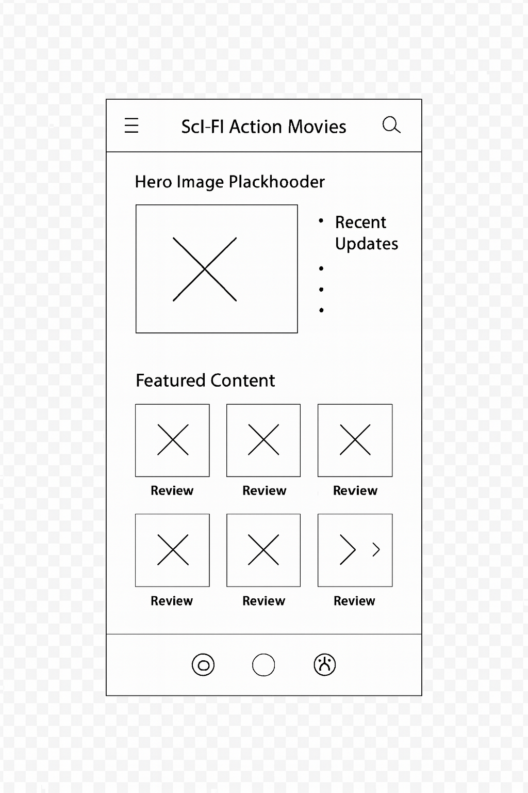
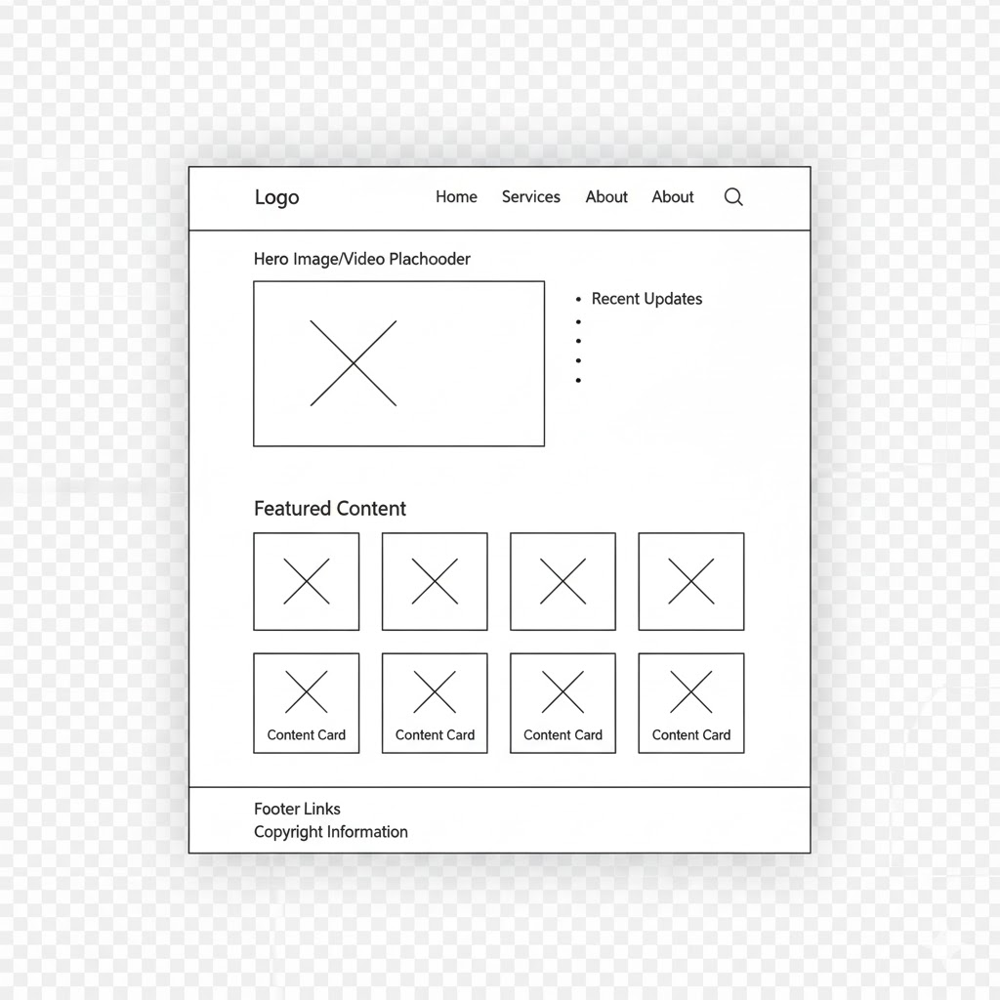

Galactic Action Reviews — a name that captures the futuristic excitement of sci-fi action movies.
This website will offer easy-to-read reviews of sci-fi action movies, movie recommendations about space, robots, time travel, and futuristic worlds, along with updates about upcoming releases. Visitors will see pictures, short summaries, and simple ratings to help them choose movies to watch.
Primary colors selected:
Blue — used for headings and navigation. Red — used for buttons, highlights, and ratings.The document uses the selected blue for headings and red for highlights to visually match the planned color scheme.
The site uses the Verdana font for all text to maintain readability and a clean, modern look.

